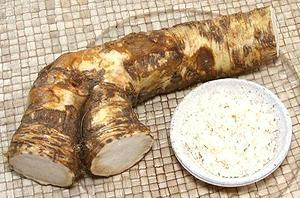

 |
Horseradish & Sauces | ||||
| Horseradish sauces are widely used in northern, central and eastern Europe. In Japanese and American sushi bars most "wasabi" is actually horseradish and mustard dyed green, as real wasabi is scarce and expensive. For details see our Horseradish page. | |||||
|
|
8 ar 1 3 |
oz T T |
Horseradish Root Water Salt Vinegar |
Fresh Horseradish
|
Note:Fresh grated horseradish (made as above) is best for these recipes, but commercial prepared horseradish (just radish, water, acid) can be used if drained well. |
||||
#1. Apple Horseradish SauceGermany - Link to recipe. | ||||
|
|
2 4 1/2 1/2 1/2 |
T T T t c |
Vinegar Horseradish, grated Sugar Cinnamon Cream, whipping |
#2. Horseradish & Whipped Cream SauceFinland - A light sauce - makes 1 cup.
|
|
3 1/4 1 1 1 |
T c t T T |
Horseradish, grated Sour Cream Dijon Mustard Mayonnaise Scallion tops |
#3. Horseradish, Sour Cream & MayoA pleasantly flavored mild sauce - makes 1/2 cup
|
|
|
2 1/2 1/2 1/8 |
T c t t |
Horseradish, grated Sour Cream Sugar Salt |
#4. Sour Cream Horseradish SauceHungary - Tejeles tormamartas - makes 1/2 cup
|
|
|
4 1 1 1 1/2 1/16 |
T t T t c t |
Horseradish, grated Dijon Mustard Wine Vinegar, white Sugar Whipping Cream Salt |
#5. Horseradish Sauce with CreamEngland - traditional with roast beef and Yorkshire pudding - makes 1/2 cup
|